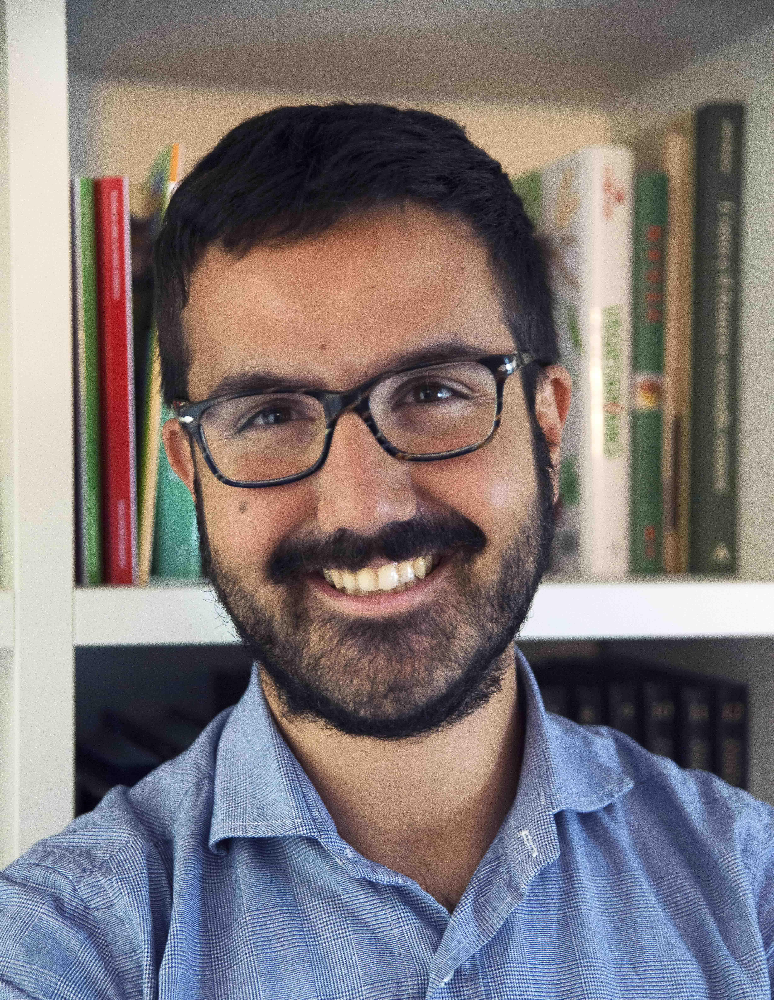
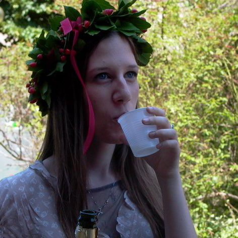

Elections y-SIS 2017 - Candidates
Annalisa Calissano

I am Anna Calissano, research fellow at MOX Politecnico di Milano and Phd Candidate “Mathematical models and methods for engineering". I graduated in 2015 in Mathematical Engineering, with a specialization in applied statistics. My research is focused on Text mining and Network Value data. I work in multidisciplinary laboratory for Smart City. Before starting my research experience at MOX, I worked as scientific communication consultant at Otto-Von-Guericke Universitaete in Germany. I am a co-funder of PoliResearch Club.
Matteo Fontana
My name is Matteo Fontana, and i’m currently a PhD student at Politecnico di Milano, where I’m working under the supervision of Prof. Massimo Tavoni and Professor Simone Vantini. I also graduated at Politecnico di Milano, with a thesis in interval-wise inference for functional-on-scalar linear models, with applications to energy consumption data. My main research interests are the development of inferential an testing techniques for functional and object oriented linear models with applications to energy and climate change policy and economics, but I’m also very interested High Perfomance Computing with statistical applications and data visualization, and the potential applications of Statistical Learning and Data Science to society and policy. You can find out something more about me, and some divulgative articles I wrote on my page on the website of COBHAM, the ERC project I’m involved in.
Monia Ranalli
My name is Monia Ranalli, I am currently a Post-doctoral Research Fellow at the department of Political Sciences of the University of Roma Tre. I obtained my Ph.D. in Statistics on December 2014, under the supervision of Professor Roberto Rocci. In 2016 my Ph.D Thesis, entitled New perspective on likelihood-based inference for latent and observed Gaussian mixture models, was awarded as the Best Ph.D. thesis in Statistics by Italian Statistical Society. During my Ph.D. I spent one year at Penn State University to collaborate with Professor Bruce Lindsay. Afterwards I was a Post-doctoral Research Fellow at the department of Statistics of Penn State University. My research is focused mainly on mixture models, latent variable models, classification problems, and composite likelihood methods.
Saverio Ranciati

My name is Saverio Ranciati and I am currently based in Bologna at the Department of Statistics, where I've just started my 3rd year post-doc fellowship. I receveid the Ph.D. degree in Statistical Sciences after a joint-double PhD program from both University of Groningen (The Netherlands) and University of Bologna (Italy). My interests lie in model-based clustering, mixture models, penalized regression, differential equations, and - most recently - network models. I work mainly in the Bayesian paradigm and I am fascinanted by the computational aspect of implementing statistical techniques. I also enjoy teaching Statistics, as I feel it gives you deeper understanding on your own perspective on the subject and polishes communication skills. You can find my personal website at: Saverio Ranciati.